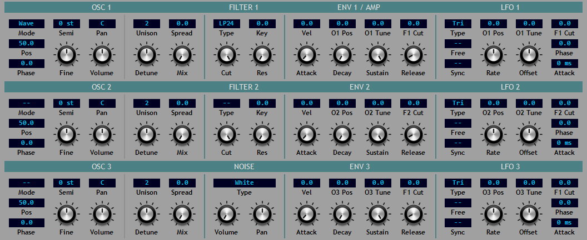
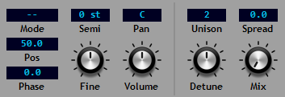
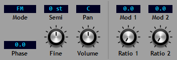
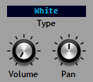
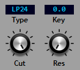
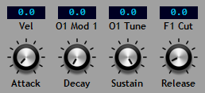
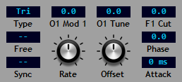

The Central Panel¶
Reducktion features a simple signal flow that is reflected in the layout of the central panel.
Sounds are originated in the three oscillators and noise generator. They are combined into stereo signals according to their volume and pan controls and directed to the filter section. Here the signal passes through the filters before reaching the amplifier stage which provides volume control via envelope 1.
Similarly, the central panel features sections for the oscillators, noise, filters and amp reflecting the signal flow from left to right.
In addition to these signal processing elements there are modulators and modulation controls; the central panel includes controls for the envelope generators and low-frequency oscillators (LFOs) that form the basis of Reducktion’s modulation system.
Oscillators¶
Oscillators are the primary sound generators and provide waveforms according to three different generation modes:
Wave - generates saw, square, triangle or sine waves as either pure waves or a mix of two adjacent waves. See the following section on wave mode for more information.
Pulse - a rectangular pulse wave whose duty-cycle is determined by the Pos parameter. By default a square wave is produced corresponding to a Pos value of 50. Changing the value will alter the duty-cycle between 0 and 100.
FM - a simple phase-modulation ‘FM’ setting which provides a single sine-wave carrier and two sine-wave modulators. The modulators are arranged in series with Mod 2 modulating Mod 1 which in turn modulates the carrier (the main oscillator voice).
Note: setting the mode to ‘- -’ will deactivate the oscillator.
The three oscillators in Reducktion are identical and include the following parameters:
Mode - the waveform generation mode: Wave, Pulse, FM or off (‘- -’).
Pos - the mix amount for Wave mode or the duty-cycle setting in Pulse mode.
Phase - the starting phase of the wave. Set to the maximum value to select random phase.
Semi - the semitone tuning of the voice. This allows the tuning to be offset from the note being played by up to 2 octaves up or down (-24 st to + 24 st).
Fine - the fine tuning of the voice in cents adjustable between a semitone up or down (-100 ct to +100 ct).
Pan - the stereo pan position of the oscillator.
Volume - the volume level of the oscillator.
In Wave and Pulse modes the oscillators present a set of controls for unison voicing. This allows up to 8 additional oscillators to be mixed into the main oscillator signal according to the following parameters:
Unison - the total number of oscillators playing in ‘unison’ from 2 to 9. These consist of the main oscillator and between 1 and 8 additional oscillators. These will be inactive until they are added to the main signal by raising the mix level from zero.
Detune - the amount by which each additional oscillator is detuned from the main oscillator pitch. The higher the value the greater the extra oscillators differ from the main oscillator.
Spread - the stereo pan positions of the additional oscillators. The higher the value the wider the stereo separation between the oscillators.
Mix - the level of the additional oscillators relative to the main oscillator.
Note: the extra unison oscillators are related to each other as pairs (1-2, 3-4, 5-6, 7-8) such that the Detune and stereo Spread parameters are mirrored in each member of the pairs. So for example the first additional oscillator 1 is detuned to a pitch below the main note while the next is tuned above it. Similarly the first oscillator will be positioned to the left of the main oscillator with the second to the right. This is repeated at differing amounts of separation for the remaining pairs with each pair added from the widest pan to the narrowest so that a consistent stereo spread is maintained as the oscillator count is increased.
For odd-numbered unison counts the main oscillator retains the base pitch of the voice with the additional oscillators being added in pairs at higher and lower pitches as determined by the detune amount. The main oscillator remains at the centre of the stereo field with the extra pairs being panned to the left and right according to the spread amount. The Mix parameter sets the volume level of all the additional pairs as a percentage of the central main oscillator.
Even-numbered unison counts also feature additional oscillators added as pairs around the main oscillator; these are panned and detuned on either side as with odd-numbered counts. Unlike the odd-numbered cases, where there are enough oscillators to balance both sides of the main oscillator, the even cases will have an extra oscillator ‘left-over’ which can create an unbalanced sound when detuned and panned. To prevent this the main oscillator is progressively panned to the right and detuned as the remaining oscillators are mixed in to the main signal. This allows the overall sound to remain more consistent and at full mix will create completely balanced oscillator pairs with no central oscillator.
When set to wave mode the oscillators can generate one of four different waveforms. The value of the Pos parameter is used to determine which one:
0 - square.
25 - triangle.
50 - sawtooth.
75 - sine.
100 - square.
Any Pos setting between these values will provide a mix of the two adjacent waveforms. For example a value of 40 will generate a mix of saw and triangle waves.
Note: use the oscillator context menu to set the ‘unmixed’ waveforms directly.
In FM mode the oscillator presents controls for the FM modulators:
Reducktion’s FM mode provides a single carrier and two modulators which are combined in series to modulate the phase of the carrier. Both carrier and modulators generate sine waves and are controlled by the following parameters:
Mod 1/Mod 2 - the modulation amounts applied to the respective modulation target. Mod 2 modulates modulator 1 while Mod 1 modulates the carrier (main oscillator).
Ratio 1/Ratio 2 - the modulation frequency of each modulator as a ratio of the carrier frequency from 1:1 to 1:10 in half-step increments.
Noise¶
The noise generator provides white or pink noise:
Type - the type of noise generated: white, pink, stereo white or stereo pink.
Volume - the output level of the noise generator. This is mixed with the oscillator outputs and passed to Filter 1.
Pan - the stereo pan position of the noise output.
Filters¶
Reducktion provides two filters, both are identical and include the following parameters:
Type - the filter type: 24 dB/Oct Lowpass, 12 dB/oct Lowpass, Highpass, Bandpass, Bandstop (notch) or Peaking.
Cut - the filter cutoff frequency.
Res - the filter resonance level. Note: the LP24 filter will self-oscillate with a high enough resonance setting.
Key - the keyboard tracking amount. This enables the cutoff frequency to be adjusted according to the note being played. Set to 100 to make the cutoff follow the note. Lower values will cause the cutoff to ‘close down’ as the higher notes are played.
Note: the frequency readout on the cutoff frequency control is only accurate when key tracking is set to zero. With tracking enabled the actual frequency will differ depending on the note being played.
By default the filters are processed in series with the output of Filter 1 being passed to Filter 2 and on to the amp. Two additional modes are available: Parallel and Split.
In Parallel mode both filters receive the same input from the oscillators and noise generator. In Split mode Filter 1 receives input from oscillators 1 and 3 while Filter 2 receives input from oscillator 2 and the noise generator. In either mode the output of both filters is combined and passed to the amp.
Envelopes¶
Reducktion provides three ADSR envelopes. Envelope 1 is dedicated to controlling the amplitude but all three can be used for any modulation task. They include the following parameters:
Attack - the attack time from 0 to 20s.
Decay - the decay time from 0 to 20s
Sustain - the sustain level from 0 to 100.
Release - the release time from 0 to 20s
Vel - the velocity sensitivity from 0, where velocity has no effect and the envelope provides the maximum output level, to 100 where the velocity completely controls the output level.
All of the modulator sections include modulation controls for selected parameters. In Envelope 1 these are:
O1 Pos - selects the modulation amount sent to the Pos parameter of Osc 1. This is active when FM mode is not selected.
O1 Mod 1 - selects the modulation amount sent to the Mod 1 parameter of Osc 1. This is active when FM mode is selected.
O1 Tune - selects the modulation amount sent to the Tune parameter of Osc 1.
F1 Cut - selects the modulation amount sent to the Cut parameter of Filter 1.
Envelopes 2 and 3 include similar controls for modulating Osc 2, Osc 3 and Filter 2.
LFOs¶
Reducktion provides three low-frequency oscillators which include the following parameters:
Type - the waveform generated: Triangle, Sine, Sawtooth, Square, Random Hold, Random Glide and Random Pulse. The random settings generate new amplitude values on each cycle; Random Hold provides fixed values between each random selection while Random Glide moves smoothly from each selection to the next. Random Pulse provides a pulse-wave of fixed amplitude with a randomly varying pulse width.
Rate - the rate of oscillation in Hz (0.01 to 20) or a host tempo-based rate (8/1 to 1/32T).
Sync - switches between a time- or tempo-based rate.
Free - enables free-running mode; the LFO becomes a global oscillator shared across all the active voices so that each is modulated in sync.
Offset - the amount by which the output is offset. By default the LFOs generate a modulation signal from -50 to +50. The Offset parameter allows this to be shifted by up to +/- 50 allowing modulation ranges between -100 to 0 and 0 to +100. See the modulation matrix section for more information about the modulation system
Phase - the starting phase of the wave. Use this to invert the waves or alter the starting modulation level (e.g. make a triangle start at its peak value).
Attack - the time required for the full modulation level to be applied from 0 to 20s. The modulation level rises from 0 to the full amount whenever a new note is played.
The remaining parameters control the modulation amount sent to the oscillators and filters.